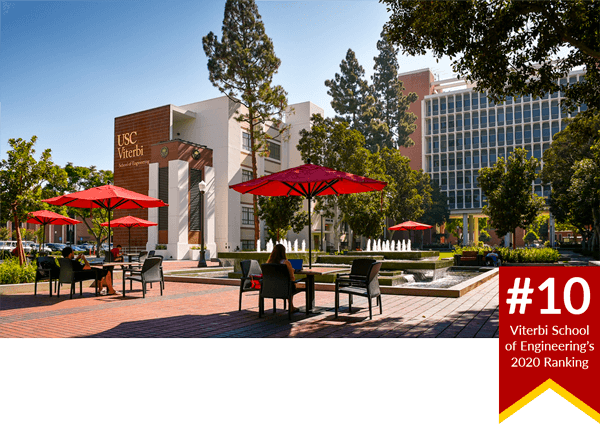

|
Bin Wang is currently a Research Fellow at National University of Singapore (NUS) - Human Language Technology (HLT) Lab .
Email / Google Scholar / CV / Github / LinkedIn |

|
|
|
| I am fortunate to have the opportunity teaching and interacting with students at USC during my Ph.D. study. |
|  |
Teaching Assistant for Dr. Brandon Franzke Syllabus EE599 - Applied and Cloud Computing for Electrical Engineers, Spring 2021, USC. Teaching Assistant for Prof. Antonio Ortega Syllabus EE141L - Applied Linear Algebra for Engineers, Fall 2019, Fall 2020, USC. Teaching Assistant for Prof. Sandeep Gupta Syllabus EE155L - Introduction to Computer Programming for Electrical Engineers, Spring 2020, USC. Teaching Assistant for Prof. Richard Leahy, Dr. Robert Popoli Syllabus EE483 - Introduction to Digital Signal Processing, Fall 2018, Spring 2019, USC. |